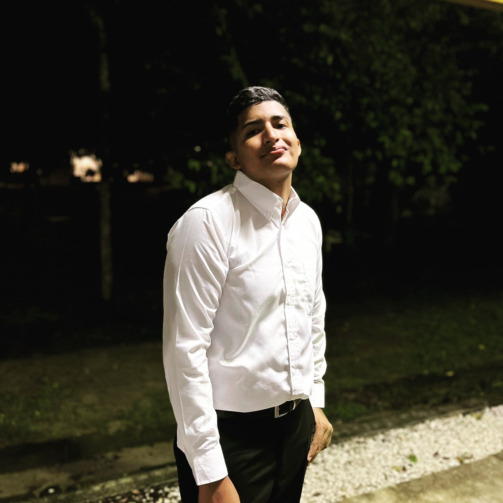

Alexander Isabel
Umaña
Guevara
PERFIL PERSONAL
Soy estudiante de Informática Empresarial en la Universidad de Costa Rica, tengo 22 años, con interés en el desarrollo web y el uso de la tecnología para resolver problemas. Me considero una persona responsable, con ganas de aprender y mejorar constantemente.
Disfruto trabajar en equipo, enfrentar retos y adquirir nuevas habilidades en programación. Busco seguir creciendo en el área tecnológica y aplicar mis conocimientos en proyectos reales.
DATOS PERSONALES
- Fecha de nacimiento: 01-04-2004
- Identificación: 208520335
- Nacionalidad: Costarricense
- Correo: alexander.umanaguevara@ucr.ac.cr
- Teléfono: 8974-7052
- LinkedIn: Ver perfil
EXPERIENCIA LABORAL
Desarrollador Web Independiente
Creación de sitios web básicos utilizando HTML, CSS y JavaScript, aplicando principios de diseño responsivo y estructura semántica.
Diseño de Logotipos
Diseño de logotipos para proyectos personales y pequeños emprendimientos, desarrollando propuestas visuales creativas y funcionales.
HISTORIAL ACADÉMICO
Universidad o colegio
Estudiante De Informtica Empresarial en la Universidad de Costa Rica (2022 - presente)
Agricultura Organica Del Instituto Nacional de Aprendizaje
Bachiller en Educacion Media (Liceo Rural El Porvenir) (2021) (Graduado Mejor de la clase)
PROGRAMAS DE CÓMPUTO
- Word
- Excel
- SQL
- HTML
- CSS
- JavaScript
HABILIDADES
- Trabajo en equipo
- Comunicación asertiva
- Responsabilidad
- Adaptabilidad
- Liderazgo
- Resolución de problemas